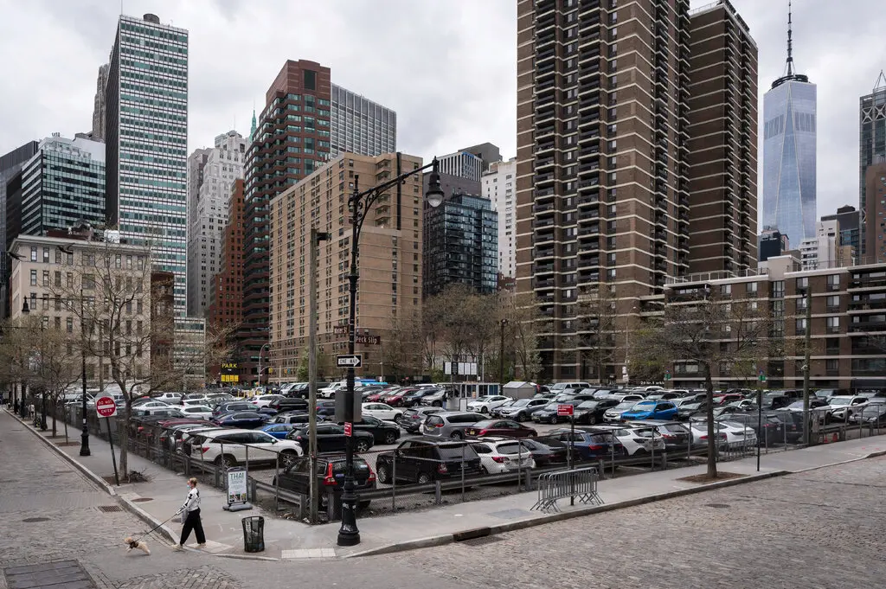

New York City is in the grip of a deepening housing crisis. With rents at record highs—climbing over 30% in some neighborhoods since 2020 (NY Times, 2024)—and a near-record low vacancy rate of just 1.4% (NY Times, 2024), the city is struggling to keep up with demand. Despite adding between 12,000 and 30,000 units annually over the past decade (NYC Comptroller, 2023), this growth lags behind population needs, especially in transit-accessible areas. Meanwhile, vast swaths of land, often just steps from subway stations, remain locked up in surface parking lots—remnants of outdated zoning laws and a car-first mindset that no longer fits the reality of 21st-century urban life. What if we reimagined these spaces? What if, instead of housing cars, they housed people? While the city adds between 12,000 and 30,000 new units annually (NYC Comptroller, 2023), that pace lags behind the needs of a growing population and prices continue to march upward, pushing residents out.

At the same time, thousands of surface parking lots lie scattered across the city, often within a short walk of an MTA station. As New York continues to embrace transit-oriented development and higher residential densities, car-centric commuting is becoming increasingly difficult—and physically harder to accommodate. These lots represent an enormous opportunity. Many of these lots could be repurposed as housing—transforming idle space into homes that better reflect the city’s evolving needs.
In this analysis, we map and quantify the city's surface parking lots within 800 meters of subway stations. Using land use data from PLUTO and other datasets from the NYC Open Data portal, we estimate the number of housing units that could be built on these sites, applying historical development densities by borough.
Our findings suggest that redeveloping these parking lots could yield tens of thousands of new homes. This won’t solve the crisis on its own—no single intervention can—but every additional unit helps. And building near transit has compounding benefits: lower carbon emissions, shorter commutes, and more vibrant, walkable neighborhoods.
The practical question now is how quickly New York can adapt its land use priorities. In a city facing a severe housing shortage and limited developable land, maintaining low-density parking lots in high-demand, transit-rich areas presents a missed opportunity. Other cities have already begun to repurpose these spaces for higher-value uses. If New York is to keep pace, it must evaluate where parking remains essential—and where the land could serve more pressing needs.